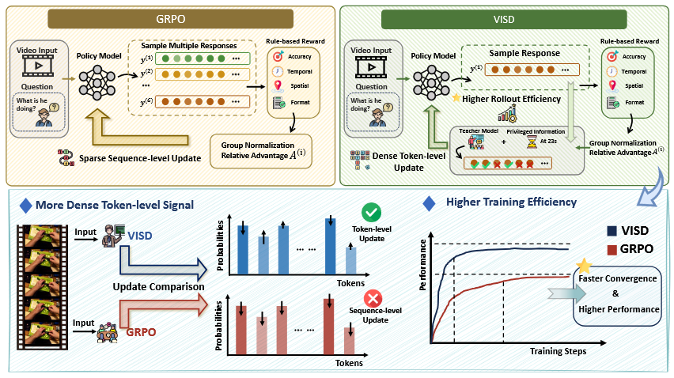
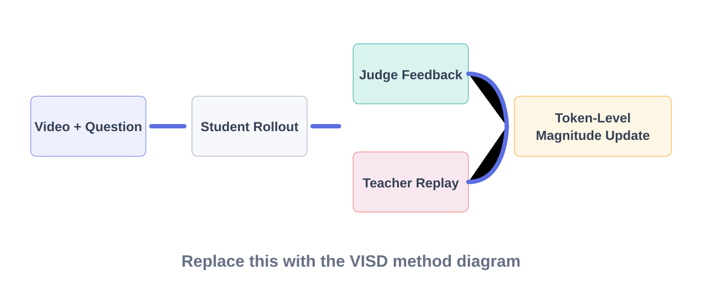
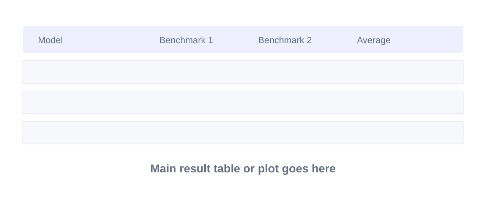
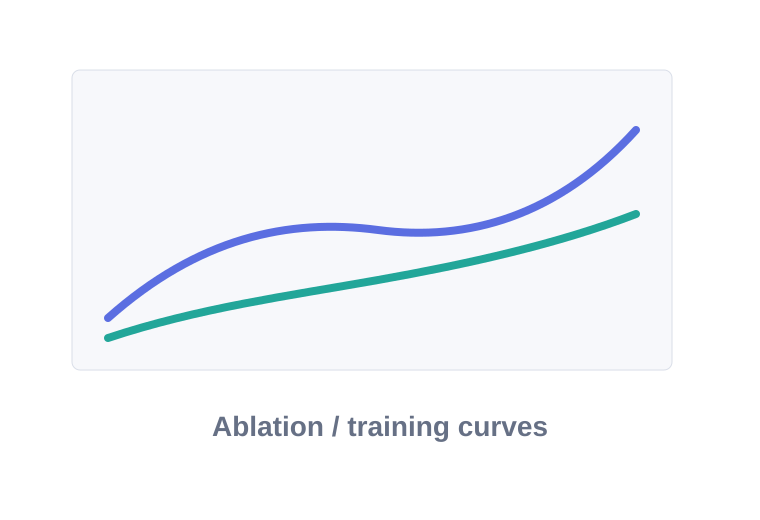
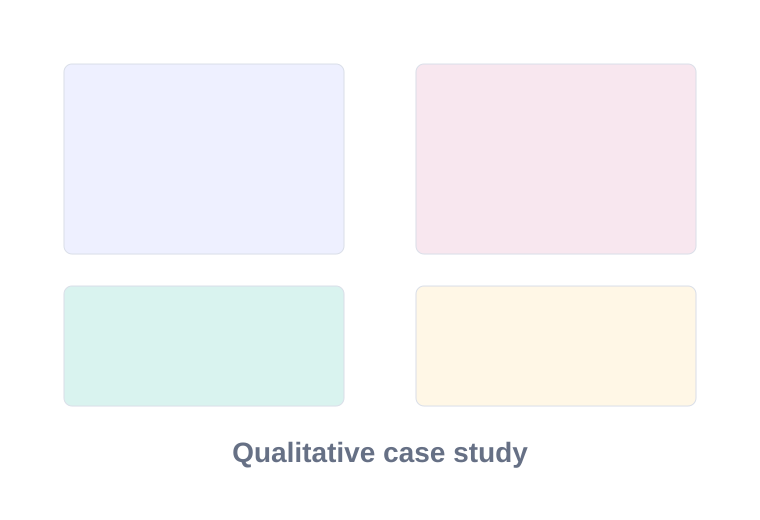

VISD: Enhancing Video Reasoning via Structured Self-Distillation
1HUST · 2Wuhan University · 3Peking University · 4Tsinghua University
TL;DR
VISD is a structured self-distillation framework that enhances video reasoning by providing diagnostically grounded token-level supervision during training. It leverages a video-aware judge to decompose errors and uses this structured feedback to guide a teacher policy for fine-grained credit assignment. Combining a stable self-distillation training paradigm tailored for video reasoning, VISD achieves strong performance and high training efficiency.
Abstract
Training VideoLLMs for complex reasoning remains challenging due to sparse sequence-level rewards and the lack of fine-grained credit assignment over long, temporally grounded reasoning trajectories. While reinforcement learning with ver ifiable rewards (RLVR) provides reliable supervision, it fails to capture token-level contributions, leading to inefficient learning. Conversely, existing self-distillation methods offer dense supervision but lack structure and diagnostic specificity, and often interact unstably with reinforcement learning. In this work, we propose VISD, a structured self-distillation framework that introduces diagnostically mean ingful privileged information for video reasoning. VISD employs a video-aware judge model to decompose reasoning quality into multiple dimensions, includ ing answer correctness, logical consistency, and spatio-temporal grounding, and uses this structured feedback to guide a teacher policy for token-level supervision. To stably integrate dense supervision with RL, we adopt a direction–magnitude decoupling mechanism, where rollout-level advantages computed from rewards de termine update direction, while structured privileged signals modulate token-level update magnitudes. This design enables semantically aligned and fine-grained credit assignment, improving both reasoning faithfulness and training efficiency. Additionally, VISD incorporates curriculum scheduling and EMA-based teacher stabilization to support robust optimization over long video sequences. Experi ments on diverse benchmarks show that VISD consistently outperforms strong baselines, improving answer accuracy and spatio-temporal grounding quality. No tably, VISD reaches these gains with nearly 2× faster convergence in optimization steps, highlighting the effectiveness of structured self supervision in improving both performance and sample efficiency for VideoLLMs
Motivation
To alleviate the sparse-reward limitation of RLVR, self-distillation offers a natural way to provide dense token-level supervision. However, existing methods usually treat additional supervision as unstructured or modality-agnostic signals. When directly applied to VideoLLMs, this leads to two key challenges:
- the supervision lacks diagnostic specificity, making it hard to distinguish logical inconsistency from spatio-temporal grounding failures
- the auxiliary teacher signal may interact unstably with reward-driven optimization.
VISD introduces a video-aware judge that produces structured, diagnostic feedback to guide token-level credit assignment. It further incorporates direction-magnitude decoupling, top-K local support, and EMA stabilization, forming a stable self-distillation framework that better captures spatio-temporal evidence in video reasoning.

Method Overview
VISD augments on-policy video reasoning training with structured privileged feedback. A judge model evaluates each rollout, a feedback-conditioned teacher replays the same completion, and direction-magnitude decoupling combines sparse reward direction with dense token-level update magnitudes.

Results
Summarize the main benchmark findings here before the figure. Keep it compact: one paragraph and one or two tables usually work best.

Analysis
Use this section for ablations, training curves, and qualitative examples. In the final page, this can mirror the reference by stacking figures vertically with short captions.


Citation
@inproceedings{visd2026,
title = {VISD: Enhancing Video Reasoning via Structured Self-Distillation},
author = {Lin, Hao and Lv, Kunyang and Jiang, Xu and Tian, Jingqi and Du, Zhongjing and Ding, Jiayu and Zhang, Qiaoman and Jin, Hongbo},
booktitle = {Conference Name},
year = {2026}
}